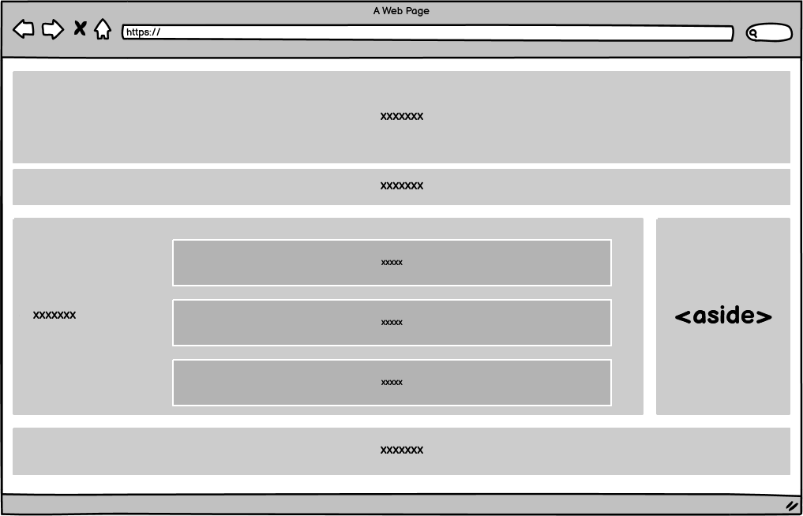
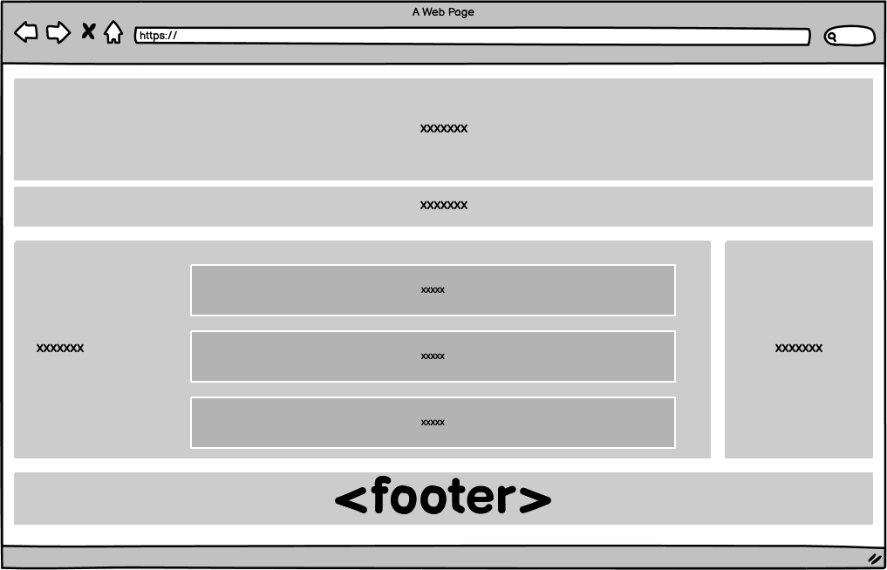

-
aside (Lateral)
-
footer (Pie)
Incluye contenido que no está directamente relacionado con el contenido principal (secundario), pero que puede aportar información adicional relacionada indirectamente con él (resúmenes, biografías del autor, enlaces relacionados, etc.), suele ponerse a un lado del documento.

Representa un grupo de contenido al final de la página: (Direcciones, Autor, licencias, fechas, etc.)
